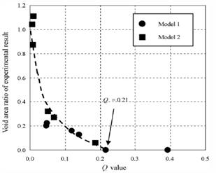

FRCMOD |
(Inter Material data) |
|
Update History: Definition has been extended in v11 |
Last updated on : 06-08-2013 |
FRCMOD Material, FracType, CrtValue, Var1, Var2, Var3, FracSoft
(for Microvoid)
FRCMOD Material, FracType(=11), CrtValue, Ndata(=9), Var2, Var3, FracSoft
F1, F2, Sigma, Sn, NStar, r0, n, F3, F4
(for Void closure)
FRCMOD Material, FracType(=12), CrtValue, Ndata, Var2, Var3, FracSoft(=100)
VoidIndenx(1), VoidVolRatio(1)
::
VoidIndex(Ndata), VoidVolRatio(Ndata)
(for Forming limit diagram)
FRCMOD Material, FracType(=17), CrtValue, Ndata, Var2, Var3, FracSoft
MinorStrain(1), MajorStrain(1)
::
MinorStrain (Ndata), MajorStrain (Ndata)
|
OPERAND |
DESCRIPTION |
DEFAULT |
|
Material |
Material number |
None |
|
FracType |
Fracture model type = 0 Normalized Cockcroft & Latham = 1 Cockcroft & Latham = 2 McClintock (Var1 = n) = 3 Freudenthal = 4 Rice & Tracy (Var1 = alpha) = 5 Oyane (Var1 = alpha0) = 6 Ayada = 7 Osakada (Var1 = a, Var2 = b) = 8 Brozzo = 9 Zhoa & Huhn = 10 Maximum effective stress / ultimate tensile strength = 11 Microvoid (GUI is not available) (new in v11) = 12 Viod closure (new in v11) = 15 Oyane model with a negative term (Var1 = alpha0) = 16 Ayada model with a negative term = 17 Forming limit diagram (FLD) (new in v11) = -N User routine (N) |
0 |
|
CrtValue |
Critical Fracture value |
0 |
|
var1 |
Parameter for specific equation |
0 |
|
var2 |
Parameter for specific equation |
0 |
|
var3 |
Parameter for specific equation |
0 |
|
FracSoft |
Flow stress softening percentage (%) |
0 |
|
DEFINITION |
|
FRCMOD specifies the damage model that one wishes to use for element deletion, separation or splitting. There are 16 different models to choose from. It is also possible to write a user subroutine which can be used for the damage model. The var1, var2 and var3 are constants for some of the equations. To find out which variables correspond to which constants and the order, see the models in the Pre-Processor. The order of the constants will be identical. |
|
REMARKS |
||
|
Microvoid damage model computes 4 damage values per element; thus the DAMAGE keyword stores four damage values per element. They are the number of voids, average size of voids, volume fraction of coalescence, and total porosity (a function of the 3 variables). These are evolved every step as a function of 9 parameters in the Microvoid damage model kinetics. Void Closure model estimates “healing factor”, which is a void ratio defined by dividing current void volume by initial void volume. The percent flow stress softening becomes 100% since it is a healing model rather than a fracture model. The internal void closing evaluation index (Q) is computed in FEM simulation using the following definition. (where 0.0 < Q < 1.0)
User needs to provide constitutive behavior of “healing factor vs. Q” in a form of function data by experimental results.
 Fig.1. Void area ratio of experimental results Vs Q value graph
Ref: Kakimoto et. al., Journal of Materials Processing Technology, 2010, Fig. 12 Forming limit diagram (FLD) model is introduced as a failure indicator in sheet metal forming simulations. The damage factor is defined as a major strain ratio (=current major strain / limit major strain) for a given major and minor strain condition. The forming limit diagram (i.e., a minor strain vs. major strain diagram) should be provided by users. |
|
RELATED TOPICS |
|
Keywords: DAMAGE (2D), DAMAGE (3D) |